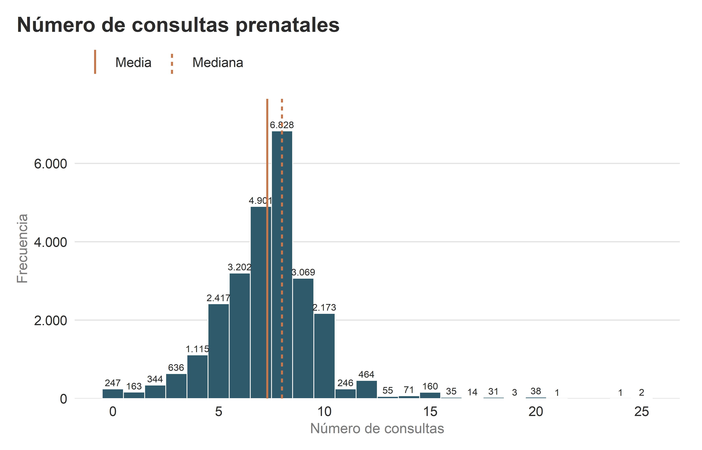
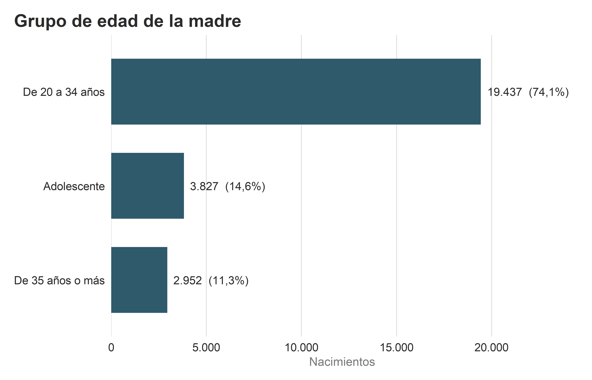
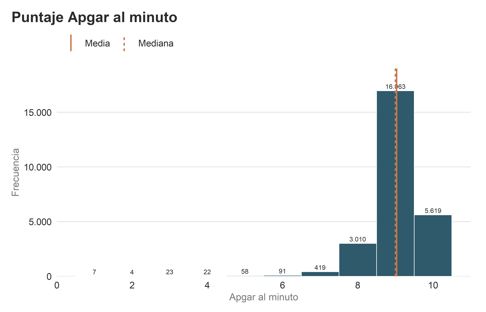
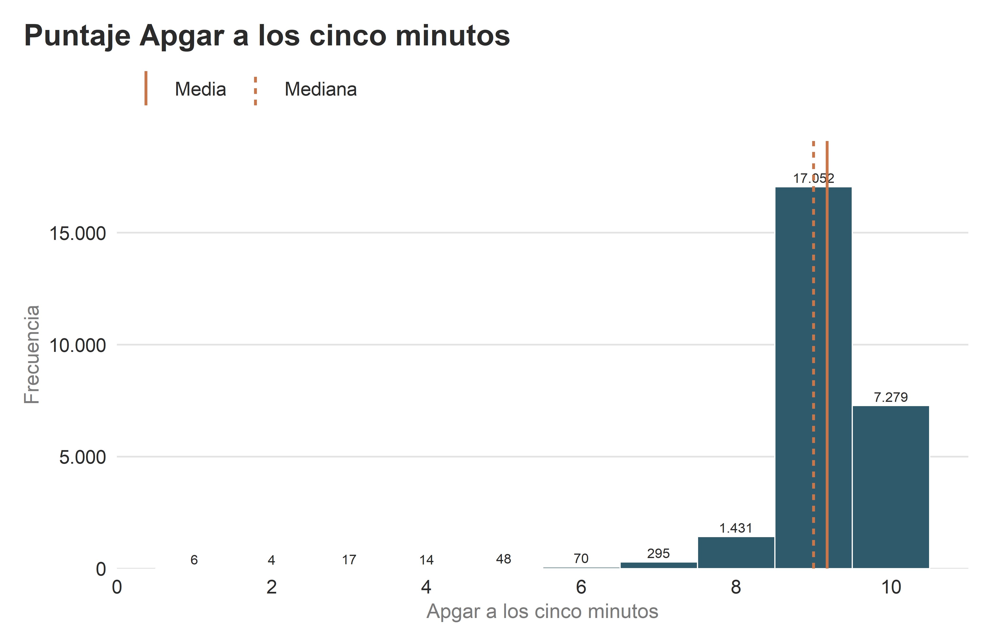
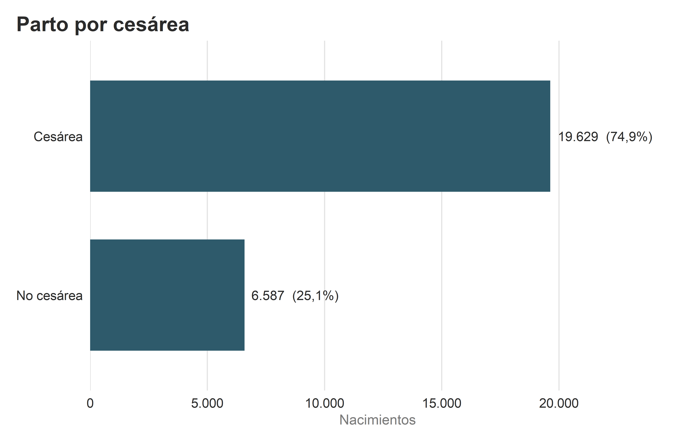
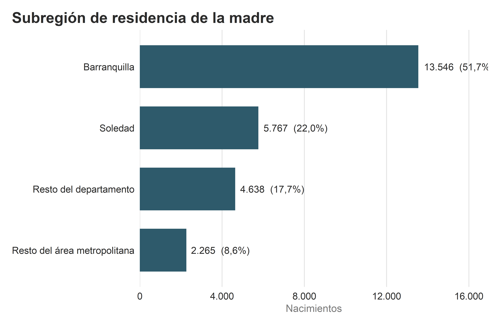

Capítulo 3 Análisis univariado
3.1 Número de consultas
| Número de consultas prenatales: resumen | |||||||
| n | Media | DE | Mediana | Q1 – Q3 | RIC | Mín | Máx |
|---|---|---|---|---|---|---|---|
| 26.216 | 7,30 | 2,34 | 8 | 6 – 8 | 2 | 0 | 25 |
En los 26.216 nacimientos se observó un promedio de 7,30 consultas prenatales (DE 2,34) y una mediana de 8, con un rango intercuartílico (RIC) de 2: la mitad central de los nacimientos tuvo entre 6 y 8 consultas. El número mínimo y máximo de consultas fue de 0 y 25, respectivamente.

Figura 3.1: Distribución del número de consultas prenatales.
En el gráfico la distribución se concentra entre 6 y 8 consultas, con un pico en 8 (6.828 nacimientos). La media (línea continua) se encuentra levemente a la izquierda de la mediana (línea discontinua), y a la derecha se observa una cola de barras con baja frecuencia, que llega hasta 25 consultas.
3.2 Edad de la madre
| Grupo de edad de la madre: frecuencias | ||
| Grupo de edad | n | % |
|---|---|---|
| Adolescente | 3.827 | 14,6% |
| De 20 a 34 años | 19.437 | 74,1% |
| De 35 años o más | 2.952 | 11,3% |

Figura 3.2: Distribución por grupo de edad de la madre.
Del total de 26.216 nacimientos, predominó el grupo de 20 a 34 años con un 74,1% (19.437 nacimientos), seguido por el de madres adolescentes con un 14,6% (3.827 nacimientos) y por último el de 35 años o más con un 11,3% (2.952 nacimientos).
3.3 Apgar al minuto
| Puntaje Apgar al minuto: resumen | |||||||
| n | Media | DE | Mediana | Q1 – Q3 | RIC | Mín | Máx |
|---|---|---|---|---|---|---|---|
| 26.216 | 9,04 | 0,73 | 9 | 9 – 9 | 0 | 1 | 10 |

Figura 3.3: Distribución del puntaje Apgar al minuto.
El puntaje Apgar al minuto fue alto en casi todos los nacimientos. El promedio fue de 9,04 (DE 0,73) y la mediana de 9, con el primer cuartil en 9 y el tercero en 9. El puntaje más frecuente fue 9, con 16.963 nacimientos (64,7%), seguido de 10. Solo el 0,8% de los recién nacidos tuvo un puntaje menor que 7.
3.4 Apgar a los cinco minutos
| Puntaje Apgar a los cinco minutos: resumen | |||||||
| n | Media | DE | Mediana | Q1 – Q3 | RIC | Mín | Máx |
|---|---|---|---|---|---|---|---|
| 26.216 | 9,18 | 0,68 | 9 | 9 – 10 | 1 | 1 | 10 |

Figura 3.4: Distribución del puntaje Apgar a los cinco minutos.
A los cinco minutos los puntajes se concentraron aún más en los valores altos. El promedio subió a 9,18 (DE 0,68) y la mediana se mantuvo en 9, con un RIC de 1 (entre 9 y 10). El puntaje más frecuente siguió siendo 9, con 17.052 nacimientos (65,0%), seguido de 10. Apenas el 0,6% de los recién nacidos quedó por debajo de 7.
3.5 Tipo de parto
| Parto por cesárea: frecuencias | ||
| Cesárea | n | % |
|---|---|---|
| Sí | 19.629 | 74,9% |
| No | 6.587 | 25,1% |

Figura 3.5: Distribución de los nacimientos según parto por cesárea.
De los 26.216 nacimientos, 19.629 (74,9%) fueron por cesárea; el 25,1% restante corresponde a partos que no terminaron en cesárea.
3.7 Subregión de residencia de la madre
| Subregión de residencia de la madre: frecuencias | ||
| Subregión | n | % |
|---|---|---|
| Barranquilla | 13.546 | 51,7% |
| Soledad | 5.767 | 22,0% |
| Resto del área metropolitana | 2.265 | 8,6% |
| Resto del departamento | 4.638 | 17,7% |

Figura 3.7: Distribución por subregión de residencia de la madre.
La mayoría de los nacimientos se concentraron en Barranquilla con el 51,7% (13.546), seguida de Soledad con el 22,0% (5.767), el resto del departamento con el 17,7% (4.638) y por último el resto del área metropolitana con el 8,6% (2.265).